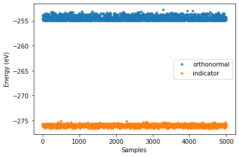

Experimenting with orthogonality and different orthonormalizations (Under construction)¶
[1]:
import numpy as np
import random
import matplotlib.pyplot as plt
from monty.serialization import loadfn
from pymatgen.io.cif import CifParser
from pymatgen.core.structure import Structure
from sklearn.linear_model import LinearRegression
from smol.cofe import ClusterSubspace, StructureWrangler, ClusterExpansion, RegressionData
from smol.moca import ClusterExpansionProcessor, CanonicalEnsemble
%matplotlib inline
# load the prim structure
lno_prim = loadfn('data/lno_prim.json')
# load the fitting data
lno_entries = loadfn("data/lno_entries.json")
Orthogonal vs Non-orthogonal basis¶
First lets look at how things can change when we use an orthogonal basis vs a non-orthogonal one.
[2]:
# Create a cluster subspace with orthonormal basis functions
cs_or = ClusterSubspace.from_cutoffs(structure=lno_prim,
cutoffs={2: 5, 3: 4.1},
ltol=0.15, stol=0.2, angle_tol=5,
supercell_size='O2-',
basis='indicator',
orthonormal=True)
# Now one with the standard non-orthogonal indicator basis
cs_nor = ClusterSubspace.from_cutoffs(structure=lno_prim,
cutoffs={2: 5, 3: 4.1},
ltol=0.15, stol=0.2, angle_tol=5,
supercell_size='O2-',
basis='indicator',
orthonormal=False)
# Check if things are orthogonal
print(cs_or.basis_orthonormal, cs_nor.basis_orthonormal)
True False
[3]:
# Put data in a structure Wranger for later
wrangler_or = StructureWrangler(cs_or)
for entry in lno_entries:
wrangler_or.add_entry(entry, verbose=False)
wrangler_nor = StructureWrangler(cs_nor)
for entry in lno_entries:
wrangler_nor.add_entry(entry, verbose=False)
Fit a CE with the two bases¶
[4]:
from sklearn.linear_model import LinearRegression
# for orthonormal basis
estimator_or = LinearRegression(fit_intercept=False)
estimator_or.fit(wrangler_or.feature_matrix,
wrangler_or.get_property_vector('energy'))
reg_data_or = RegressionData.from_sklearn(estimator_or,
wrangler_or.feature_matrix,
wrangler_or.get_property_vector('energy'))
expansion_or = ClusterExpansion(cs_or,
coefficients=estimator_or.coef_,
regression_data=reg_data_or)
# for non-orthogonal basisi
estimator_nor = LinearRegression(fit_intercept=False)
estimator_nor.fit(wrangler_nor.feature_matrix,
wrangler_nor.get_property_vector('energy'))
reg_data_nor = RegressionData.from_sklearn(estimator_nor,
wrangler_nor.feature_matrix,
wrangler_nor.get_property_vector('energy'))
expansion_nor = ClusterExpansion(cs_nor,
coefficients=estimator_nor.coef_,regression_data=reg_data_nor)
[5]:
from sklearn.metrics import mean_squared_error, max_error
train_predictions_or = np.dot(wrangler_or.feature_matrix,
expansion_or.coefs)
rmse = mean_squared_error(wrangler_or.get_property_vector('energy'),
train_predictions_or, squared=False)
maxer = max_error(wrangler_or.get_property_vector('energy'),
train_predictions_or)
print('"Details of the fit for orthonormal basis"')
print(f'RMSE (orthonormal) {rmse} eV/prim')
print(f'MAX (orthonormal) {maxer} eV/prim')
print(f'Fitted dielectric constant (orthonormal) {1/expansion_or.coefs[-1]}')
train_predictions_nor = np.dot(wrangler_nor.feature_matrix,
expansion_nor.coefs)
rmse = mean_squared_error(wrangler_nor.get_property_vector('energy'),
train_predictions_nor, squared=False)
maxer = max_error(wrangler_nor.get_property_vector('energy'),
train_predictions_nor)
print('')
print('"Details of the fit for non-orthogonal basis"')
print(f'RMSE (non-orthogonal) {rmse} eV/prim')
print(f'MAX (non-orthogonal) {maxer} eV/prim')
print(f'Fitted dielectric constant (non-orthogonal) {1/expansion_nor.coefs[-1]}')
"Details of the fit for orthonormal basis"
RMSE (orthonormal) 0.009973122786563739 eV/prim
MAX (orthonormal) 0.019123139061385075 eV/prim
Fitted dielectric constant (orthonormal) 38.431411030417244
"Details of the fit for non-orthogonal basis"
RMSE (non-orthogonal) 0.009973122786563739 eV/prim
MAX (non-orthogonal) 0.019123139061385075 eV/prim
Fitted dielectric constant (non-orthogonal) 38.431411030417244
Look at differences between a correlation vectors¶
Notice that for the standard indicator correlations will always be positive, but for an orthonormalized basis this is not always the case.
[6]:
i = random.randint(0, len(wrangler_or.structures))
plt.plot(cs_or.corr_from_structure(wrangler_or.structures[i]), 's')
plt.plot(cs_nor.corr_from_structure(wrangler_nor.structures[i]), 'o')
plt.xlabel('Orbit function')
plt.ylabel('Correlation')
plt.legend(['orthonormal', 'indicator'])
[6]:
<matplotlib.legend.Legend at 0x7fc7a28ebc40>
Compare canonical Monte Carlo runs with the different bases¶
Finally lets look at how MC runs differ for orthogonal vs non-orthogonal bases.
[9]:
from pymatgen.transformations.standard_transformations import OrderDisorderedStructureTransformation
# Create a supercell matrix
sc_matrix = np.array([[4, 0, 0],
[0, 2, 0],
[0, 0, 1]])
# Here we will just use the order disordered transformation from
# pymatgen to get an ordered version of a prim supercell.
# The structure will have the same composition set in the prim.
transformation = OrderDisorderedStructureTransformation()
supercell = expansion_or.cluster_subspace.structure.copy()
supercell.make_supercell(sc_matrix)
# this can take a bit of time....
test_struct = transformation.apply_transformation(supercell)
print(test_struct.composition)
Li+4 Ni3+4 Ni4+4 O2-16
[10]:
from smol.moca import Sampler
# this convenience method will take care of creating the appropriate
# processor for the given cluster expansion.
ensemble_or = CanonicalEnsemble.from_cluster_expansion(expansion_or,
sc_matrix)
ensemble_nor = CanonicalEnsemble.from_cluster_expansion(expansion_nor,
sc_matrix)
# Define initial occupancy
init_occu_or = ensemble_or.processor.occupancy_from_structure(test_struct)
init_occu_nor = ensemble_nor.processor.occupancy_from_structure(test_struct)
# This will take care of setting the defaults
# for the supplied canonical ensemble
sampler_or = Sampler.from_ensemble(ensemble_or,
temperature=2000)
sampler_nor = Sampler.from_ensemble(ensemble_nor,
temperature=2000)
sampler_or.run(1000000,
initial_occupancies=init_occu_or,
thin_by=200, # thin_by will save every 100th sample only
progress=True) # progress will show progress bar
sampler_nor.run(1000000,
initial_occupancies=init_occu_nor,
thin_by=200, # thin_by will save every 100th sample only
progress=True) # progress will show progress bar
Sampling 1 chain(s) from a cell with 32 sites...: 100%|██████████| 1000000/1000000 [04:02<00:00, 4122.50it/s]
Sampling 1 chain(s) from a cell with 32 sites...: 100%|██████████| 1000000/1000000 [04:08<00:00, 4020.34it/s]
[11]:
# Samples are saved in a sample container
samples_or = sampler_or.samples
print('"Details of the MC run for orthonormal basis"')
print(f'Fraction of succesfull steps (efficiency) {sampler_or.efficiency()}')
print(f'The last step energy is {samples_or.get_energies()[-1]} eV')
print(f'The minimum energy in trajectory is {samples_or.get_minimum_energy()} eV')
# You can get the minimum energy structure and current structure
# by using the ensemble processor
curr_s_or = ensemble_or.processor.structure_from_occupancy(samples_or.get_occupancies()[-1])
min_s_or = ensemble_or.processor.structure_from_occupancy(samples_or.get_minimum_energy_occupancy())
samples_nor = sampler_nor.samples
print('')
print('"Details of the MC run for non orthogonal basis"')
print(f'Fraction of succesfull steps (efficiency)(non-orthogonal) {sampler_nor.efficiency()}')
print(f'The last step energy (for non-orthogonal) is {samples_nor.get_energies()[-1]} eV')
print(f'The minimum energy (for non-orthogonal) in trajectory is {samples_nor.get_minimum_energy()} eV')
# You can get the minimum energy structure and current structure
# by using the ensemble processor
curr_s_nor = ensemble_nor.processor.structure_from_occupancy(samples_nor.get_occupancies()[-1])
min_s_nor = ensemble_nor.processor.structure_from_occupancy(samples_nor.get_minimum_energy_occupancy())
"Details of the MC run for orthonormal basis"
Fraction of succesfull steps (efficiency) 0.000103
The last step energy is -254.68885736147269 eV
The minimum energy in trajectory is -254.88589239675727 eV
"Details of the MC run for non orthogonal basis"
Fraction of succesfull steps (efficiency)(non-orthogonal) 0.00291
The last step energy (for non-orthogonal) is -276.1373985714158 eV
The minimum energy (for non-orthogonal) in trajectory is -276.5632651124954 eV
[12]:
energies_or = samples_or.get_energies()
energies_nor = samples_nor.get_energies()
plt.plot(energies_or, '.')
plt.plot(energies_nor, '.')
plt.xlabel('Samples')
plt.ylabel('Energy (eV)')
plt.legend(['orthonormal', 'indicator'])
[12]:
<matplotlib.legend.Legend at 0x7fc79eec5fd0>

Constructing a Cluster Subspace orthonormalized with respect to a concentration measure¶
This orthonormalized the basis functions with respect to the concentrations given in the prim structure. Note this does not give you a “concentration dependent” ECI’s. Only ECI’s centered about the given concentration.
[13]:
# The prim is set to sites concentrations (Li+: 0.5, Vacancy: 0.5), (Ni+: 0.5, Ni: 40.5).
# You can see this from printing it.
# This is equivalent to a uniform concentration. So it is not different then standard orthonormalization.
print(lno_prim)
cs_onc = ClusterSubspace.from_cutoffs(structure=lno_prim,
cutoffs={2: 5, 3: 4.1},
ltol=0.15, stol=0.2, angle_tol=5,
supercell_size='O2-',
basis='sinusoid',
orthonormal=True,
use_concentration=True) # this will use the concentrations in the prim structure
# to create the "concentration-centered" basis
# Create another one without using concentration
cs_on = ClusterSubspace.from_cutoffs(structure=lno_prim,
cutoffs={2: 5, 3: 4.1},
ltol=0.15, stol=0.2, angle_tol=5,
supercell_size='O2-',
basis='sinusoid') # Note sinusoid is by construction already orthogonal.
# We can check orthogonality
print(cs_onc.basis_orthonormal, cs_on.basis_orthogonal)
Full Formula (Li0.5 Ni1 O2)
Reduced Formula: Li0.5Ni1O2
abc : 2.969848 2.969848 5.143928
angles: 73.221350 73.221347 60.000002
Sites (4)
# SP a b c
--- ---------------------- ---- ---- ----
0 Li+:0.500 0 0 0
1 Ni3+:0.500, Ni4+:0.500 0.5 0.5 0.5
2 O2- 0.75 0.75 0.75
3 O2- 0.25 0.25 0.25
True True
[15]:
wrangler_onc = StructureWrangler(cs_onc)
for entry in lno_entries:
wrangler_onc.add_entry(entry, verbose=False)
wrangler_on = StructureWrangler(cs_on)
for entry in lno_entries:
wrangler_on.add_entry(entry, verbose=False)
[16]:
print(cs_onc.corr_from_structure(wrangler_onc.structures[0]))
print(cs_on.corr_from_structure(wrangler_on.structures[0]))
[ 1. -0.66666667 -0.66666667 0.44444444 0.55555556 0.55555556
0.55555556 -0.44444444 -0.44444444 -0.66666667 -0.66666667]
[1. 0.66666667 0.66666667 0.44444444 0.55555556 0.55555556
0.55555556 0.44444444 0.44444444 0.66666667 0.66666667]
[ ]: